Construya su red de apoyo y compruebe, de forma automática, que cada persona registrada puede votar y dónde vota.
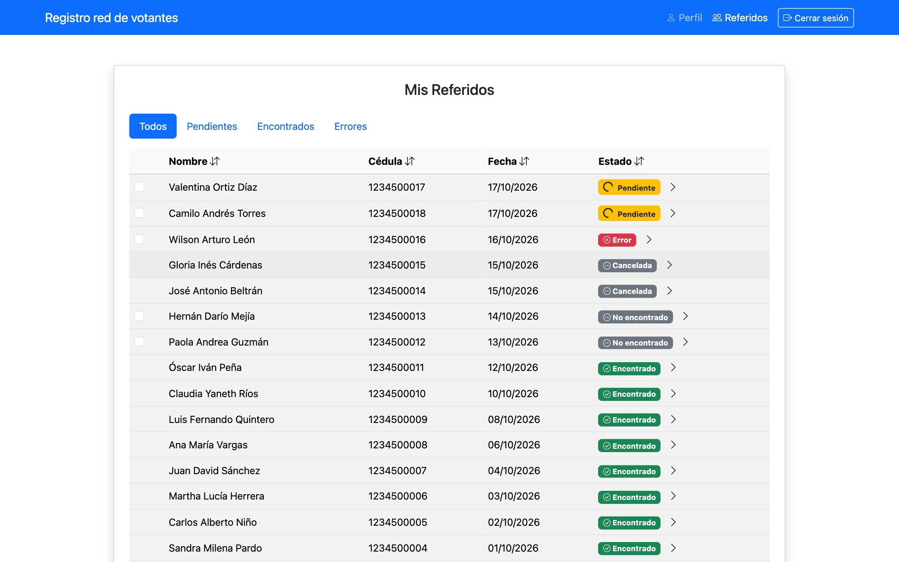
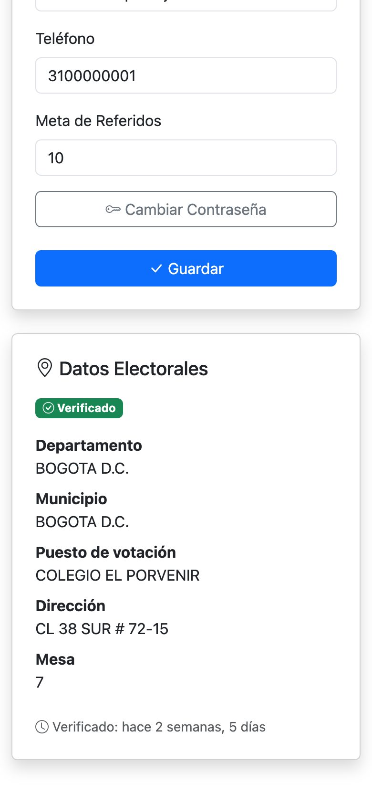
Validación automática de cédulas Puesto y mesa de votación Celular y computador
Portafolio de producto · Octubre 20261 / 16
El reto
Una lista de apoyos vale poco si las cédulas no pueden votar
Las listas en papel, Excel o WhatsApp se pierden, se repiten y nadie sabe cuántas personas son de verdad.
Una cédula mal escrita, cancelada o que no está en el censo electoral es un voto que no llega.
Sin saber dónde vota cada persona, es difícil organizar el día de elecciones.
Registro red de votantes lo resuelve en tres partes
Registro con el enlace del líder
Cada líder comparte su propio enlace. Quien se registra con él queda en su red, sin listas aparte.
Validación automática de la cédula
El sistema consulta por sí solo la información pública de la Registraduría: puesto, dirección y mesa. También detecta cédulas canceladas o fuera del censo.
Tablero del líder
El líder ve en un solo lugar a toda su red: quién está verificado, quién no y por qué.
Registro red de votantes2 / 16
Cómo funciona
De una invitación a un voto verificado, en 4 pasos
1
El líder comparte su enlace
Lo copia con un toque y lo envía por WhatsApp o redes sociales.
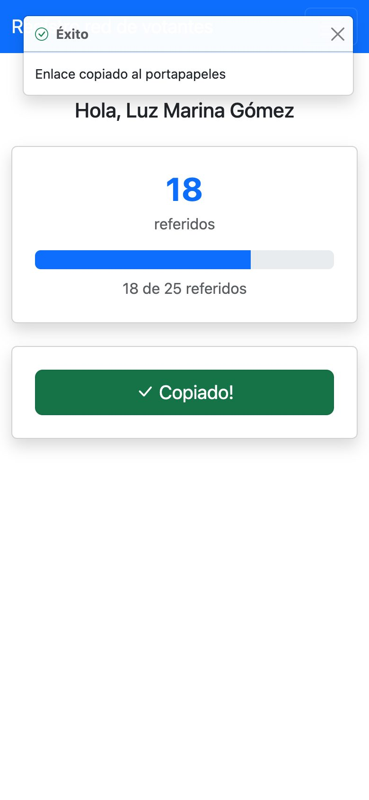
2
La persona se registra en un minuto
Desde su celular: cédula, nombre, celular y contraseña.
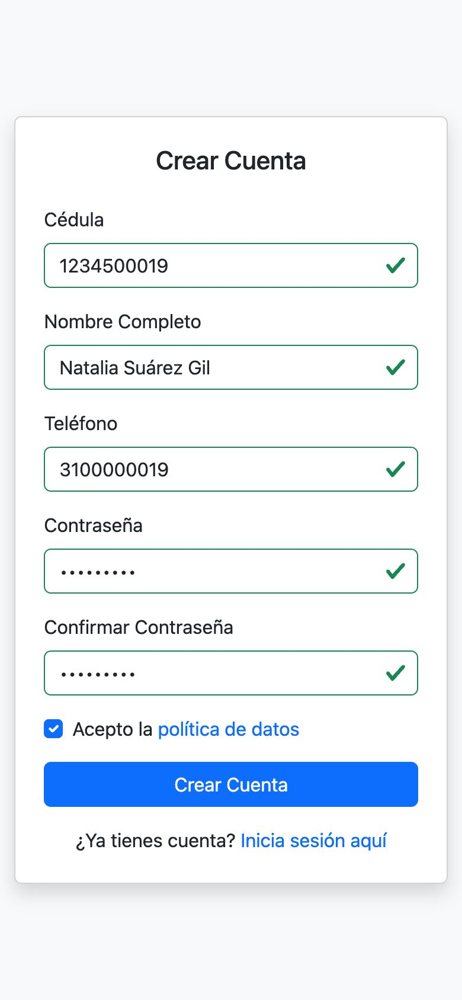
3
El sistema consulta la Registraduría
De forma automática, sin que nadie digite nada.
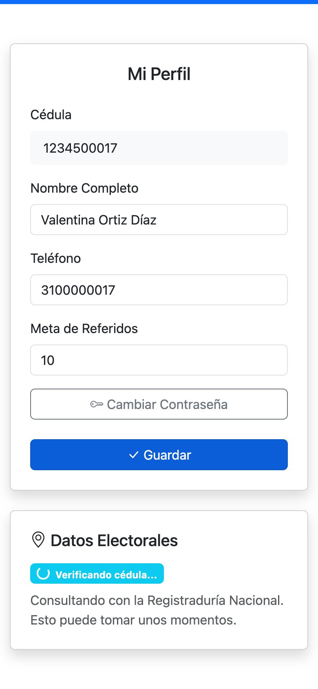
4
El líder ve quién puede votar y dónde
Cada persona aparece con su estado y su puesto de votación.
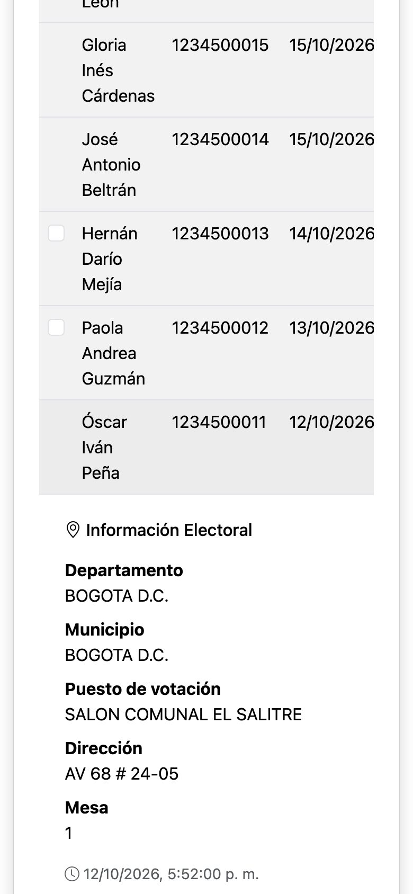
Registro red de votantes3 / 16
El corazón del sistema
Así se valida una cédula real
Justo después del registro: Verificando cédula…
Pocos minutos después: puesto, dirección y mesa
1
Se registraLa persona crea su cuenta con su número de cédula. Queda en estado «Pendiente».
2
Consulta automáticaEl sistema consulta con la Registraduría el lugar de votación de esa cédula. Nadie tiene que buscarlo a mano.
3
Guarda el resultadoDepartamento, municipio, puesto, dirección y mesa quedan en el perfil de la persona y en el tablero de su líder.
4
Se ve sin recargarLa pantalla de la persona y la del líder se actualizan solas cada 5 segundos.
5
Si algo falla, lo intenta de nuevoSi la Registraduría no responde, el sistema vuelve a consultar solo al minuto y a los 5 minutos.
Registro red de votantes4 / 16
Resultados de la validación
Lo que el líder ve de cada persona
Encontrado
La cédula está habilitada y ya se conoce su puesto, dirección y mesa.
Esa persona puede votar.
Pendiente
La consulta está en curso.
Se actualiza sola; no hay que hacer nada.
No encontrado
La cédula no aparece en el censo electoral.
Conviene revisar que esté bien escrita o que la persona inscriba su cédula.
Cancelada
La Registraduría reporta la cédula cancelada, por ejemplo por fallecimiento.
Se muestra el motivo. No suma un voto.
Error
La consulta no se completó después de 3 intentos.
El líder la vuelve a consultar con un clic.
Registro red de votantes5 / 16
Página · Crear cuenta
Registrarse toma un minuto
La persona abre el enlace que le envió su líder y llena un formulario corto.
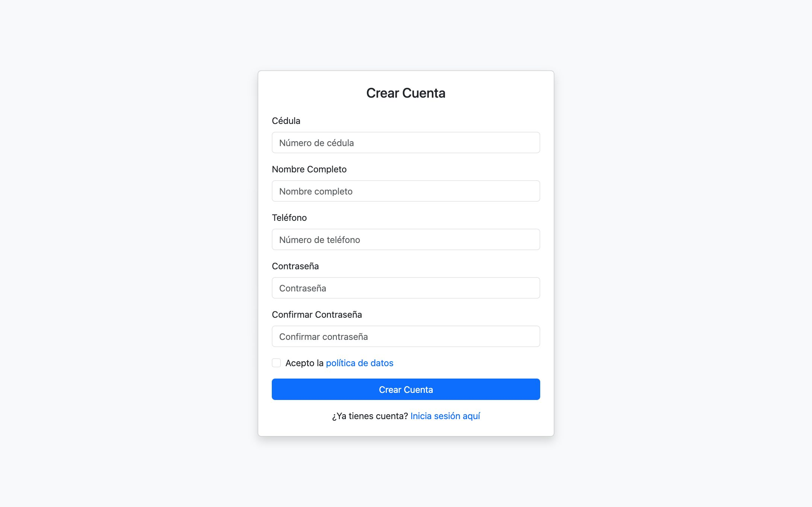
Pide solo cédula, nombre, celular y contraseña.
Revisa mientras se escribe: la cédula y el celular solo aceptan números, y lo correcto se marca en verde.
Para continuar, la persona acepta la política de tratamiento de datos.
El registro queda unido al líder que compartió el enlace.
Recorrido por la aplicación6 / 16
Páginas · Iniciar sesión y contraseña
Entrar es tan simple como recordar la cédula
El usuario es la misma cédula. No hay correos ni nombres de usuario que olvidar.
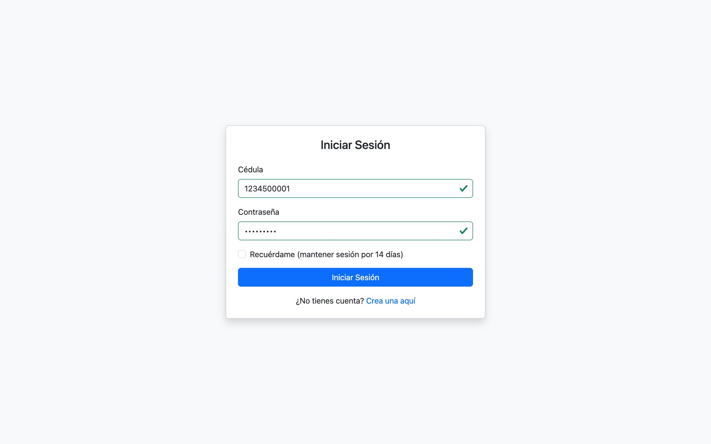
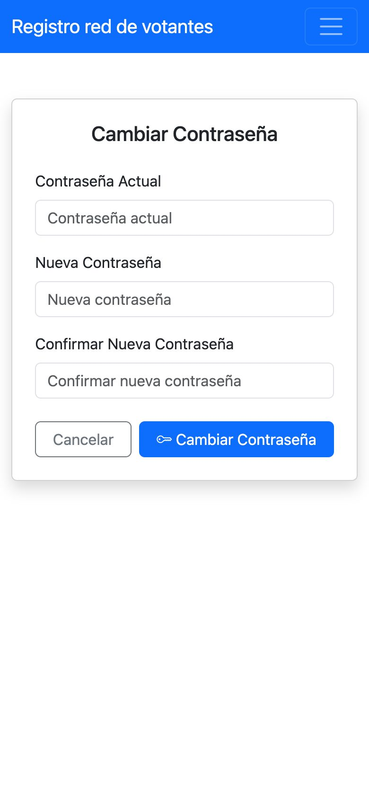
Se entra con cédula y contraseña.
«Recuérdame» mantiene la sesión abierta 14 días en ese celular.
Cada persona puede cambiar su contraseña desde su perfil (pantalla del celular).
Recorrido por la aplicación7 / 16
Página · Inicio
Su red y su meta, apenas entra
Lo primero que ve cada persona es cuántas personas ha sumado y cuánto le falta para su meta.
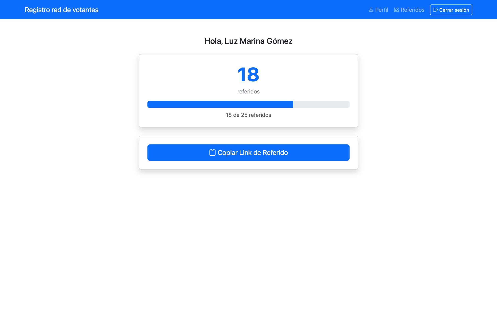
Contador de referidos y barra de avance hacia la meta.
Botón «Copiar link de referido» para compartir por WhatsApp. Confirma con «Enlace copiado».
La meta la define cada persona en su perfil.
Recorrido por la aplicación8 / 16
Página · Mi perfil
Cada persona sabe dónde vota
Además de sus datos, el perfil muestra los datos electorales que se obtuvieron de la Registraduría.
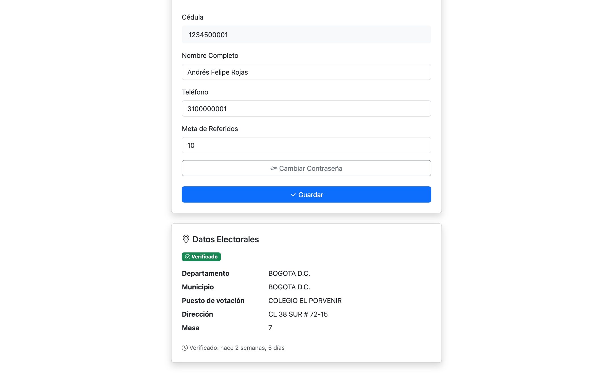
Nombre, celular y meta de referidos editables; la cédula no se puede cambiar.
Departamento, municipio, puesto, dirección y mesa, con la fecha de la consulta.
Si la consulta falló, un botón permite intentarlo de nuevo.
Recorrido por la aplicación9 / 16
Página · Mis referidos
El tablero del líder
Toda la red en una tabla, con el estado de cada cédula y su lugar de votación.
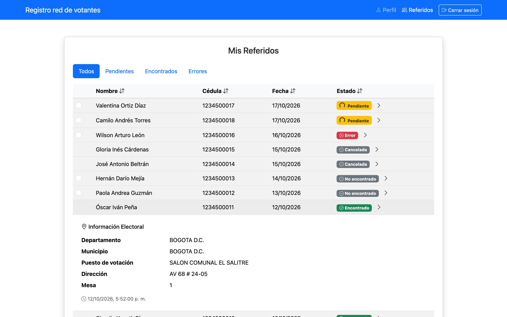
Filtros Todos, Pendientes, Encontrados y Errores. Se puede ordenar por nombre, cédula, fecha o estado.
Al tocar a una persona se abre su puesto, dirección y mesa.
Se pueden volver a consultar hasta 10 personas a la vez, y los estados se actualizan solos.
Recorrido por la aplicación10 / 16
Página · Panel de administración
Una vista completa para el equipo coordinador
Quien administra la plataforma ve todas las cédulas registradas, de todos los líderes.
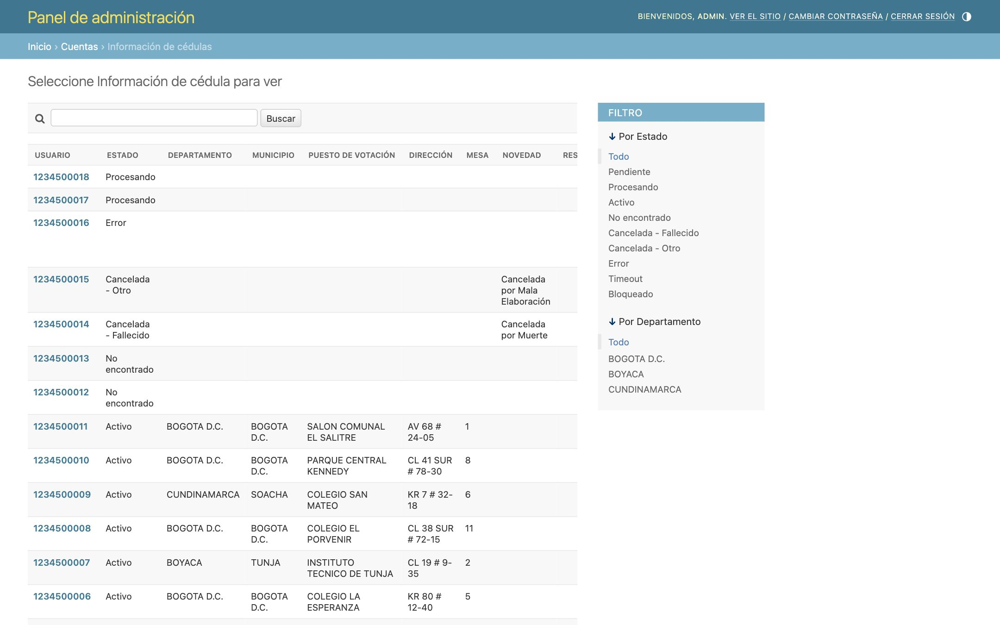
Lista de todas las personas con su estado y lugar de votación.
Filtros por estado y por departamento; búsqueda por cédula.
Gestión de usuarios: dar el rol de líder a quien coordina una red.
En esta vista los datos se consultan pero no se modifican a mano: vienen siempre de la consulta automática.
Recorrido por la aplicación11 / 16
Caso real
Una lista de 18 apoyos, menos votos reales
En el primer piloto, una líder registró en la plataforma a 18 personas que apoyaban a su candidato. Sobre el papel eran 18 votos. Al validar cada cédula con la Registraduría, el resultado fue otro:
11de 18 cédulas registradas no habrían sumado un voto
4verificadas, con puesto y mesa
6no aparecen en el censo electoral
5cédulas canceladas (4 por fallecimiento)
3por volver a consultar
Sin la validación, la campaña habría contado con 18 votos. Los confirmados eran 4, y como máximo 7 si las 3 consultas pendientes salen bien.
Con ella, la campaña conoce el tamaño real de su red antes del día de elecciones y sabe a quién contactar para corregir datos.
Cifras reales del piloto (registros de enero y febrero de 2026), agrupadas y sin datos personales. Las pantallas de este documento usan personas ficticias.
Registro red de votantes12 / 16
Próximamente
Control de asistencia a encuentros
La siguiente función en desarrollo: saber quién asiste a cada reunión, recorrido o evento.
Crear encuentros
Con fecha, hora y lugar.
Registrar la llegada
Cada asistente se marca con su cédula.
Asistencia por líder
Cuántas personas de cada red llegaron.
Convocados y asistentes
Comparar a quién se invitó con quién llegó.
Esta función está en planeación y todavía no hace parte de la aplicación.
Disponible hoy
Registro con enlace del líder
Validación automática de cédula
Puesto, dirección y mesa
Cédulas canceladas o fuera del censo
Tablero del líder
Panel de administración
Registro red de votantes13 / 16
Borrador · Página para su grupo
Su propia página, con el registro integrado
Un ejemplo de cómo un grupo o campaña puede presentarse y recibir registros validados desde el primer día.
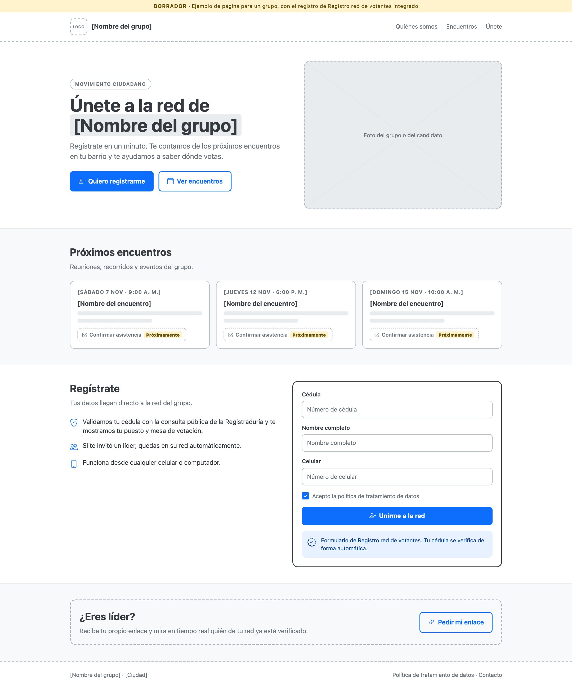
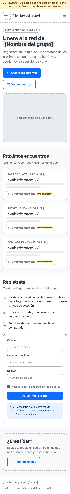
Presenta al grupo y sus próximos encuentros.
El botón «Quiero registrarme» lleva al formulario conectado: cada registro llega validado a la red.
Confirmar asistencia a encuentros: próximamente.
Registro red de votantes14 / 16
Confianza
Protección de datos personales
Una red de apoyo maneja cédulas y lugares de votación. Así los cuida la plataforma:
Autorización expresa
Nadie queda registrado sin aceptar la política de tratamiento de datos, como pide la Ley 1581 de 2012 (Habeas Data).
Solo información pública
El lugar de votación se obtiene de la consulta pública de la Registraduría, la misma que cualquier ciudadano puede hacer.
Cada líder ve solo su red
Un líder no puede ver a las personas registradas por otros líderes.
Contraseñas cifradas
Se guardan de forma que nadie puede leerlas, ni siquiera quien administra la plataforma.
Registro red de votantes no está afiliado a la Registraduría Nacional del Estado Civil ni cuenta con su respaldo. Cada campaña debe tener su propia política de tratamiento de datos. Este documento no es asesoría legal.
Registro red de votantes15 / 16
Contacto
Hablemos de su red
Cotización según el tamaño de su red y el número de líderes.